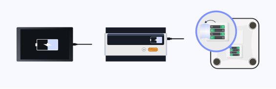
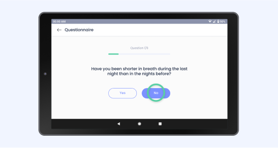
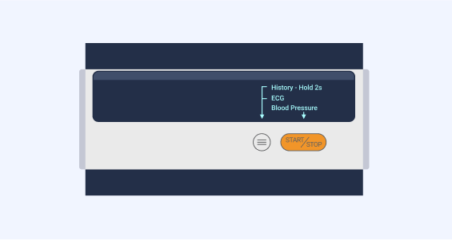
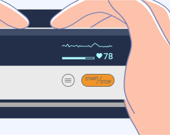
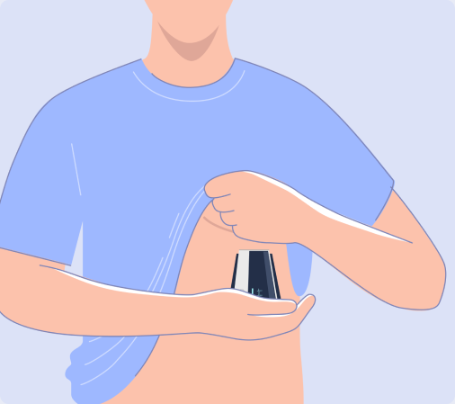

Giriş
Sağlık değerlerinizi günde bir kez, tercihen aynı saatte ölçün ve tabletinizdeki semptom anketini yanıtlayın. Ölçümleri uyandıktan hemen sonra yapmanızı öneririz. Bu şekilde değerler günden güne karşılaştırılabilir ve sağlık durumunuz en iyi şekilde değerlendirilebilir.
Ölçüm sonuçlarınız, veri koruma yönetmeliklerine uygun olarak tıp uzmanlarına ve ilgili doktorunuza güvenli bir şekilde iletilir.
Cihazlarınızın şarjlı olduğundan emin olun. Cihazlarınızı şarj etmek için, tabletinizi ve Tansiyon/EKG monitörünüzü birlikte verilen şarj kablolarını kullanarak şarj edin. Lütfen tartı için yanında verilen AAA pilleri kullanın. Tartıyı kullanmadan önce arka taraftaki pil koruma kapağını çıkarın.
Tabletin Başlatılması
Yan taraftaki GÜÇ düğmesine kısa bir süre basarak tabletinizi AÇIN veya KAPATIN. ACTIMI Telecare Uygulaması otomatik olarak başlayacaktır. Tabletiniz çalışmazsa, şarj edildiğinden emin olun ve düğmeyi 3 saniye basılı tutun.
Ölçümler sırasında, ölçüm değerlerinin başarılı bir şekilde aktarılması için tabletiniz Açık olmalı ve EKG monitörü ve terazi ile aynı odada bulunmalıdır.
Ölçümlerden sonra, GÜÇ düğmesine kısa bir süre basarak tabletini kapatabilirsiniz.
Formun Doldurulması
- "Görevler" ekranında Anketi başlat butonuna dokunun.

- Ardından nasıl hissettiğinize bağlı olarak Evet veya Hayır'ı seçin. 
- Soruları yanıtladıktan sonra BİTİR'e tıklayın ve ilk görevinizi tamamlayın.

EKG Ölçümü
EKG ölçümünü yapmadan önce, hassas ölçümler elde etmek için aşağıdaki noktalara dikkat edin:
- EKG elektrodu doğrudan cilde karşı konumlandırılmalıdır.
- Cildiniz veya elleriniz kuruysa, ölçümden önce nemli bir bez kullanarak nemlendirin.
- EKG elektrotları kirliyse, dezenfeksiyon alkolüyle nemlendirilmiş yumuşak bir bez veya pamuklu çubuk kullanarak kiri temizleyin.
- Ölçüm yaparken, ölçüm yaptığınız elinizle vücudunuza dokunmayın.
- Lütfen sağ ve sol eliniz arasında temas olmaması gerektiğini unutmayın. Aksi takdirde ölçümler doğru şekilde alınamaz.
- Ölçüm sırasında hareketsiz kalın, konuşmayın ve cihazı sabit tutun. Her türlü hareket ölçümleri geçersiz kılacaktır.
- Ayakta dururken değil otururken ölçüm yapın.
EKG kaydını başlatmak için
- Düğmeye
 kısa bir süre basarak cihazı açın. Başlamıyorsa, şarj olup olmadığını kontrol edin.
kısa bir süre basarak cihazı açın. Başlamıyorsa, şarj olup olmadığını kontrol edin.
- Başlamadan önce aynı ekranı gördüğünüzden emin olun. Değilse düğmeye kısaca basın.

- Ölçümü başlatmak için cihaz üzerindeki düğmeye
 basınız. Cihazı resimde gösterildiği gibi avucunuzun içine alın. 30 saniye bekleyin, sonuç okumaları görüntülenecektir.
basınız. Cihazı resimde gösterildiği gibi avucunuzun içine alın. 30 saniye bekleyin, sonuç okumaları görüntülenecektir.


EKG kaydını tekrar başlatmak için Ana ekrana dönmek üzere  düğmesine basın, ardından
düğmesine basın, ardından  düğmesine basın.
düğmesine basın.
EKG Ölçümünüzün Kalitesi
EKG ölçümünün kalitesi ölçüm yöntemine ve kişiye bağlı olarak değişir. Sağlık durumunuzun değerlendirilmesi için iyi bir türetme kalitesi çok önemlidir.
EKG'nizi ölçerken cihazınızın ekranında derivasyonun kalitesini görebilirsiniz. Kalp trasesinde iyi tanımlanmış, eşit tepe noktaları arayın.
Kötü EKG ölçüm kalitesi
İyi EKG ölçüm kalitesi

Ölçüm Yöntemleri
EKG kaydetmek için 4 yöntem vardır. "El - El" ölçüm yöntemini seçin. Kötü bir EKG derivasyon kalitesi alırsanız, aşağıdaki EKG ölçüm pozisyonlarını deneyin ve gelecekte en iyi EKG derivasyon kalitesine sahip olanı seçin.
El-El

El-Göğüs
El-Karın

Sağ El-Sol Ayak

Tansiyon Ölçümü
Doğru ölçümlerin yapılmasına yardımcı olmak için bu talimatları izleyin:
- Ölçüm yapmadan önce en az 5 dakika dinlenin.
- Stres tansiyonu yükseltir. Stresliyken ölçüm yapmaktan kaçının.
- Bacaklarınız açık ve ayaklarınız yerde düz olacak şekilde bir sandalyeye oturun. Kolunuzu bir masanın üzerine yerleştirin, böylece manşet kalbinizle aynı hizada olacaktır.
- Ölçüm yaparken hareketsiz kalmalı, konuşmamalı ve manşeti sıkmamalısınız.
Tansiyon ölçümünü başlatmak için
- Düğmeye kısa bir süre basarak cihazı açın. Başlamıyorsa, şarj olup olmadığını kontrol edin.
- Başlamadan önce aynı ekranı gördüğünüzden emin olun. Değilse düğmeye kısaca basın.
- Manşeti üst kolun etrafına, dirsek ekleminin yaklaşık 1 ila 2 cm yukarısına, resimde gösterildiği gibi sarın. Giysiler nabzın zayıf atmasına ve ölçüm hatalarına neden olabileceğinden manşeti doğrudan cilde yerleştirin.
- Tansiyon ölçümünü başlatmak için tuşuna basın. Monitör, ölçüm yaparken manşetin havasını otomatik olarak yavaşça indirecektir. Tipik bir ölçüm yaklaşık 30 saniye sürer.
- Ölçüm tamamlandığında sonuç görüntülenecektir.


Tansiyon ölçümünü durdurmak için düğmeye  tekrar basabilirsiniz.
tekrar basabilirsiniz.
Ölçüm yapıldıktan sonra
Ölçümler tamamlandığında monitör manşetin havasını otomatik olarak indirecektir. Ölçümleri yaptıktan sonra gücü kapatmak için  düğmesine basın. Manşeti çıkarın.
düğmesine basın. Manşeti çıkarın.
Kilo Ölçümü


- Tartıyı sert ve düz bir yüzeye yerleştirin. Tartıyı halı veya muşamba gibi yumuşak bir yüzeyde kullanmak, tartı okumalarının doğruluğunu etkileyebilir.
- Tartım doğruluğunu sağlamak için, lütfen teraziyi uyandırmak için üzerine hafifçe basın ve terazide tartım yapmadan önce en az 10 saniye bekleyin. Terazi hareket ettirilmişse de uyandırmanız gerekir.
- Tartı ekranında ağırlığınızı görene kadar vücut tartısının üzerinde durun. Cihaz ekranındaki değer sabitlendiğinde ve yanıp sönmediğinde ölçüm tamamlanmıştır.
Teşekkürler, her şeyin en iyisini diliyoruz